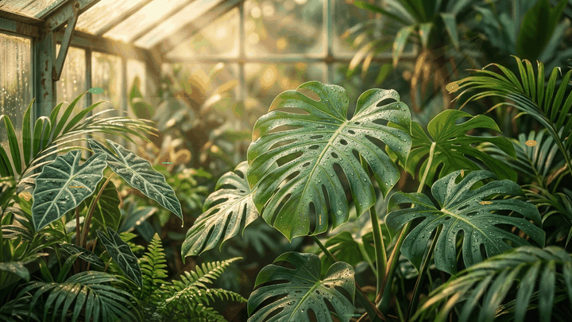

Vector SVG
100% Transparan
halobun_growth_animation.svg
Ilustrasi gembor emas menyiram tunas dan bulir gandum dengan background transparan tanpa kotak latar.
Aset visual bergerak bertema lukisan pemandangan sawah terasering & dedaunan tanaman asli agar tampilan web hidup, dinamis, dan tidak monoton.
← Lihat Website Live HallobunLukisan foto lanskap perbukitan teh, sawah terasering Jawa/Bali dengan sorot mentari terbit dan gerakan kabut pagi yang berputar loop tanpa putus.
Bisa digunakan sebagai video/gif background di hero section, landing page promosi, ataupun slide webinar pertanian.

Foliage tanaman monstera, palem, dan calathea dengan butir embun dan sorotan cahaya kaca greenhouse yang bernapas hidup.
Memberikan kesan segar, sejuk, dan terpercaya untuk pengunjung yang menyukai berkebun dan tanaman hias.
Ilustrasi gembor emas menyiram tunas dan bulir gandum dengan background transparan tanpa kotak latar.